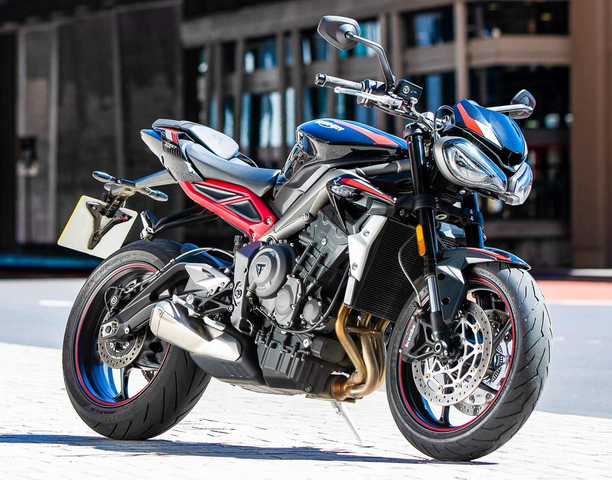

2020 Triump Street Triple R Review
Regarded as the “Definitive Streetfighter”, the Triumph Street Triple R has been a staple of the legendary Triumph Lineup since it’s introduction to the market during the latter part of 2007. For 2020, the Street Triple R has undergone a few upgrades to make it stand out from its competitors.
At the heart of the 2020 Triumph Street Triple R is Liquid cooled, inline 3-cylinder engine which gives a maximum power output of 116 Horsepower. Paired with the 6-speed gearbox with Triumph Shift Assist, this motorcycle is guaranteed to deliver a great level of performance for the rider. The motorcycle comes equipped with a multi-functional LCD instrument pack which has great features like programmable gear change lights, gear position indicator, and a lap timer. This, along with the 3 riding modes on offer are great examples for the high specification of equipment offered with the 2020 Street Triple R.
Street Triple R has received several upgrades for 2020. The front of the motorcycle has been updated with new twin LED headlights and a new mirror design. A freshly styled silencer, updated bodywork and graphics along with a new choice of color schemes are the other upgrades offered with the 2020 Street Triple R.
The new 2022 Triumph Street Triple R is available from $11,195.00 USD